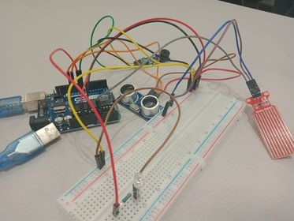
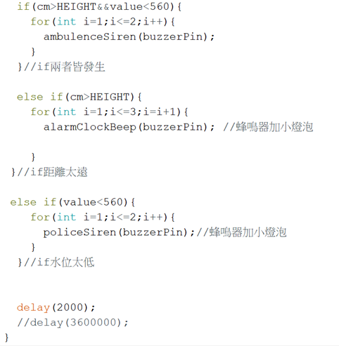

「汪！汪！汪！」「家裡的小狗餓了怎麼辦？碗裡沒有飼料了……」
「那就補飼料啊！」可是當主人忙於工作、學業，甚至是娛樂時，
就會時常忽略了陪伴在自己左右的小夥伴也是需要食糧、水這些生理需求的，
他們無法像人類一樣可以自己盛乾淨的水源、食物。真的飢腸轆轆時，還可能會去吃下非常不乾淨的東西。
為了不發生這樣的事情，我們組決定為此想出辦法。
經過我們組的討論，為了解決上述問題，我們決定做出一個「餵食警報器」來提醒主人該餵寵物了。
「餵食警報器」最初的想法是利用超音波感測器、水位感測器、小燈泡以及蜂鳴器來達到：
只要水位及飼料高度過低，超出或低於所規定距離範圍，就會使蜂鳴器發出聲響、小燈泡發出亮光來達到提醒的作用。
(圖一)利用Arduino感測器來偵測所需要的數據，再利用所回傳的數據進行程式運算、判斷，最後執行符合條件的結果看是否需要發出警報。
警報系統是利用程式的編寫來達到我們想要的各種警報聲響以及燈泡的發亮。
(圖二)為模擬成品的電路圖，但因為元件裡並無水位感測器，所以此感測器並沒有在模擬圖裡面。
(圖三)為成品電路圖。
(圖四)為部分程式碼，判斷超音波以及水位的數值是否符合標準。內容中的函式皆為蜂鳴器的聲音種類以及燈泡亮暗。
根據設計方案，我們使用Tinkercad 模擬執行，確認電路組裝是可行的。
接著上網查詢相關資料，得知超音波感測器能測得最遠的距離為4公尺，而最短距離為兩公分，
接著經過我們實際測量，發現在這個範圍內是可行的。
水位感測器能測量數值的最大值為小於4公分，我們透過實際量測寵物喝水容器的高度，發現是可行的。
Q1、超音波有若太接近於感測物體，反而會產生錯亂、顯示亂數這個問題。
A：可以做出一個腳架來增高超音波感測器的距離，不僅可以避免過近所導致的錯亂，也可以避免寵物在吃飼料時，撞歪感測器的可能性。
Q2、蜂鳴器所發出的嗡嗡嗡不明叫聲。
A：經過其他程式的執行，我們推測可能是當程式設定腳位時，所發出給蜂鳴器的訊號而導致有嗡嗡嗡的聲響。
Q3、當感測器偵測時，有一個極高或極低的數值被感應到，所導致的不正確結果。
A：利用平均值數據來代替時間點，即可稍微降低、中和小部份極高或極低的數值了。
成品的基礎運作在這次的製作中都已完成。我們期望未來可以再增加一些更自動化、更方便的功能，
例如：自動餵食或者與手機連結。自動餵食是希望當主人有事而不在家時，寵物也可以不用擔心糧食以及飼料的不足；
與手機連結則是希望當警報響起時，主人真的有事在忙，能夠利用手機先暫時把警報關閉，等到事情結束就可以去補充糧食了。
數據來代替時間點，即可稍微降低、中和小部份極高或極低的數值了。